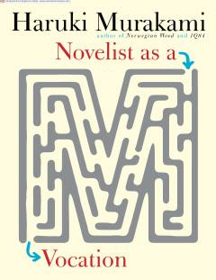

RKXaruki Murakamining yozuvchilik kasbi va ijodiy jarayon haqidagi samimiy esselari.
Ushbu kitob mashhur yapon yozuvchisi Xaruki Murakamining yozuvchilik kasbi, ijodiy jarayon va adabiy hayot haqidagi mulohazalaridan iborat. Muallif o'zining yozuvchi sifatidagi tajribasi, roman yaratish texnikasi va adabiy dunyoqarashi bilan o'rtoqlashadi.